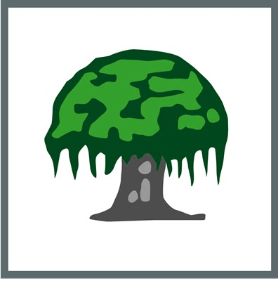
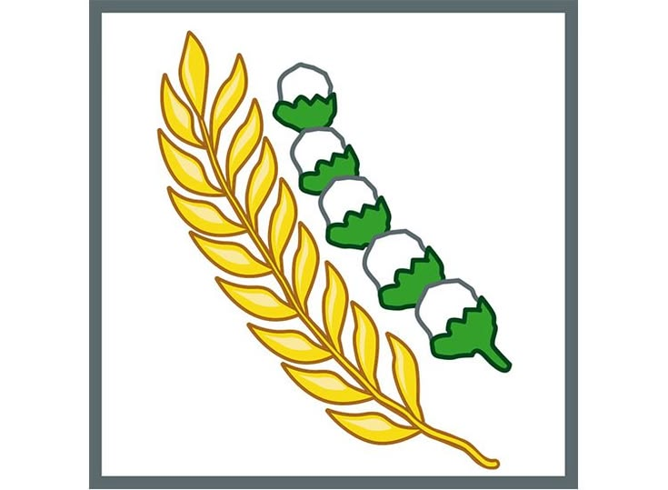

Nama: Nurul safika
Kelas: XI RPL 1
Absen: 27
PANCASILA
Ketuhanan Yang Maha Esa
Kemanusiaan yang Adil dan Beradab

Persatuan Indonesia
Kerakyatan yang Dipimpin oleh Hikmat Kebijaksanaan dalam Permusyawaratan/Perwakilan

Keadilan Sosial bagi Seluruh Rakyat Indonesia